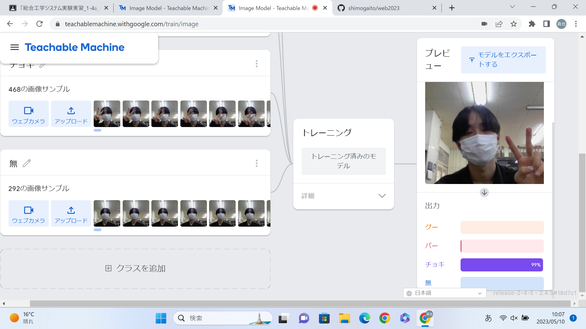
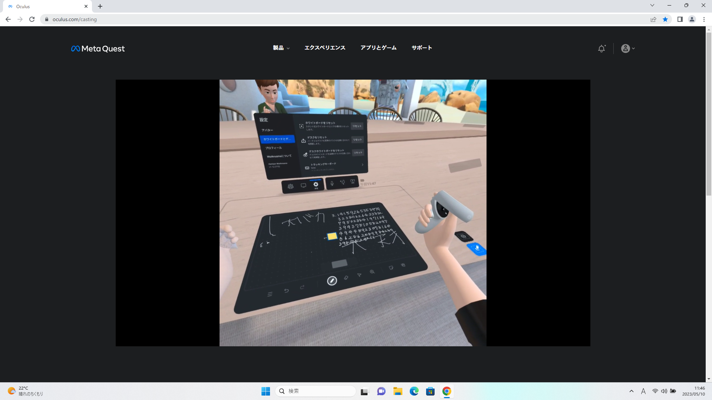

第2週目
2-1 １週目のレポートをHTMLで作る
１週目のレポート
1.内容
レポートの書き方について学びました。具体的にはどのようにしてテンプレートの文章を書き換えるのかなどを学び実践しました。
2.感想
どんな内容のレポートを書けばいいのかを考えるのが難しかったです。自分なりに感想や反省点を書くことができたので良かったと思います。
自分の知らないコマンドがたくさん打ち込まれていたので、それがどういう役割なのか知りたいです。
2-2 機械学習体験

1.内容
Teachable Machineを使ってAIに画像を学習させて、別の画像は何の要素が強いのかをパーセントで表示させました。
今回は「グー」「チョキ」「パー」の画像を学習させました。上の画像はチョキを出してAIが何なのかを判断している様子です。
2.感想
Teachable Machineを使えば簡単に機械学習モデルを作成することができて、やろうと思えば自分でもAIがつかえるんだということを感じることができました。
しかしグーを出しているのにチョキと認識されたりしたので、時間があればもっと多くの枚数の写真を撮ってより認識の精度が高くなるようにしたいです。
2-3 VR（バーチャルリアリティー：Virtual Reality）会議室の体験

1.内容
VRゴーグルでWorkroomsというアプリケーションを体験しました。
VR内のホワイトボードにコントローラーを使って絵や文字を書きました。
2.感想
VRを初めて体験したのでとても新鮮で面白かったです。特に自分が向いた方向に映像が動いていく感覚が本当に自分がその世界にいるかのような感覚ですごかったです。
Workroomsでほかの学生と同じ世界に入ったときに、その学生のアバターがいる方向から声が聞こえてくることで誰がしゃべっているのかを判断することができたので工夫されているなと感じた。